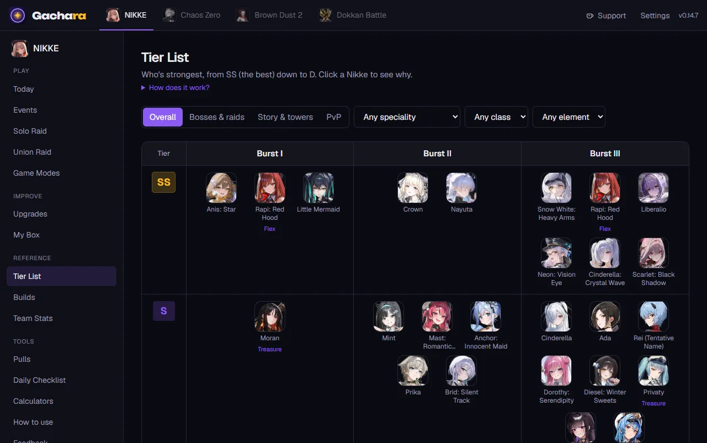
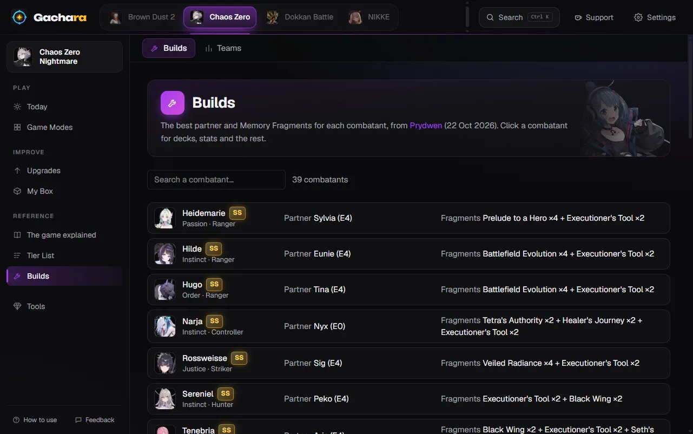
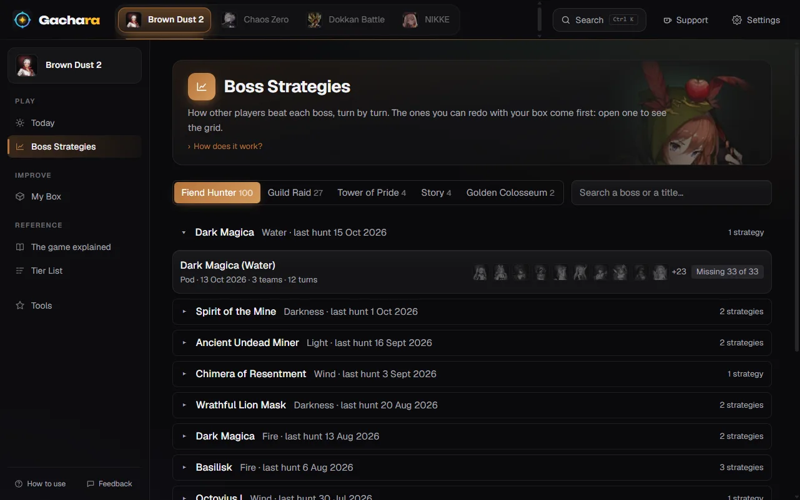
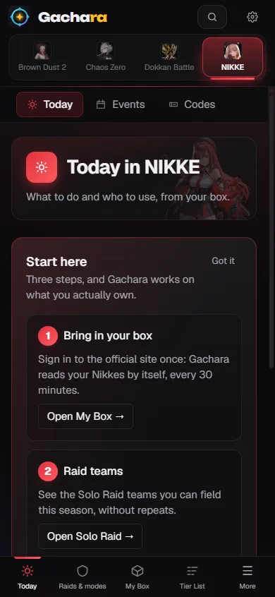

Free for Windows, Android, iPhone and the browserGratis per Windows, Android, iPhone e browser
Your gacha companion Il tuo compagno per i gacha
One tier list built from the best guide sites, your own box kept up to date by itself, and clear advice on which teams you can field and what to upgrade next, based on the characters you actually own. Una tier list sola fatta dalle fonti migliori, il tuo box che si aggiorna da solo, e consigli chiari su quali team puoi schierare e cosa potenziare, in base ai personaggi che hai davvero.
- Free, no adsGratis, senza pubblicità
- No account neededNessun account obbligatorio
- English and ItalianIn inglese e in italiano

Pick your gameScegli il tuo gioco
Each game gets its own help, built around how it's played.Ogni gioco ha i suoi aiuti, costruiti su come si gioca.
What it doesCosa fa
One tier listUna tier list sola
Instead of five sites that disagree, one rating that blends them, weighted by how reliable each is for each kind of content. Click a character to see where its rating comes from.Invece di cinque siti che non vanno d'accordo, un voto solo che li mette insieme, pesati per quanto ognuno è affidabile su ogni tipo di contenuto. Clicca un personaggio per vedere da dove viene il voto.
Your box, by itselfIl tuo box, da solo
Gachara reads your characters from the game's official site, or from the game screen while you scroll your list. You don't type in a thing.Gachara legge i tuoi personaggi dal sito ufficiale del gioco, o dallo schermo del gioco mentre scorri la lista. Non devi scrivere niente a mano.
Teams you can actually fieldTeam che puoi fare davvero
Raid teams, event teams and boss strategies built on what you own, with what to do when you're missing someone, and how to play them.Team per i raid, per gli eventi e strategie dei boss costruiti su quello che hai, con cosa fare quando ti manca qualcuno e come giocarli.
What to upgrade nextCosa potenziare
Where your resources help the most, in order: levels, skills, gear, and what to farm for it.Dove le tue risorse servono di più, in ordine: livelli, skill, equipaggiamento, e cosa farmare per averli.
While you playMentre giochi
An overlay above the game, daily checklists that tick themselves, pull planning, the event calendar, and a heads-up for what's about to end.Un overlay sopra il gioco, checklist del giorno che si spuntano da sole, i conti dei pull, il calendario degli eventi e un avviso per quello che sta per finire.
English and ItalianIn inglese e in italiano
The whole app in both languages, with the game's own terms left as you know them.Tutta l'app nelle due lingue, con i termini del gioco lasciati come li conosci.
A look insideUno sguardo dentro




Four ways to use itQuattro modi per usarla
Windows
The complete version: everything above, the overlay and automatic updates.La versione completa: tutto quello che c'è qui sopra, l'overlay e gli aggiornamenti automatici.
Android
Made to be used on its own, without a PC: it reads your box on the phone itself. Newer, and still catching up with Windows.Fatta per essere usata da sola, senza PC: legge il box sul telefono stesso. È più nuova, e sta ancora raggiungendo Windows.
iPhone
The same as the Android app, installed for free with AltStore or SideStore. It reads your Dokkan box from a screen recording.La stessa dell'app Android, installata gratis con AltStore o SideStore. Legge il tuo box di Dokkan da una registrazione dello schermo.
In your browserNel browser
Nothing to install, on any device. Tier lists, builds, guides and checklists; your box from a screen recording (Dokkan), by hand or from your account.Niente da installare, su qualunque dispositivo. Tier list, build, guide e checklist; il box da una registrazione dello schermo (Dokkan), a mano o dal tuo account.
See what works where.Guarda cosa funziona dove.
Free, and safe for your accountGratis, e sicura per il tuo account
- No ads and no account needed. Everything is stored on your device.Niente pubblicità e nessun account obbligatorio. Tutto resta sul tuo dispositivo.
- Gachara only looks at what the game shows on screen, like a screenshot. It never reads the game's memory or its network traffic, and it never taps or plays for you.Gachara guarda solo quello che il gioco mostra sullo schermo, come uno screenshot. Non legge mai la memoria del gioco né il suo traffico di rete, e non tocca né gioca mai al posto tuo.
- When you sign in to an official game site inside Gachara, you sign in directly with that site: Gachara never sees or stores your password.Quando accedi al sito ufficiale di un gioco dentro Gachara, accedi direttamente a quel sito: Gachara non vede e non salva mai la tua password.
- An optional account (Sign in with Google) keeps your progress the same on all your devices. The privacy policy says exactly what it stores.Un account facoltativo (accesso con Google) tiene i progressi uguali su tutti i tuoi dispositivi. La privacy dice esattamente cosa salva.
QuestionsDomande
Is it really free?È davvero gratis?
Yes. No ads, no paid version, nothing locked. If it saves you time you can buy me a coffee on Ko-fi, and that's all.Sì. Niente pubblicità, nessuna versione a pagamento, niente di bloccato. Se ti fa risparmiare tempo puoi offrirmi un caffè su Ko-fi, e basta.
Can it get my game account banned?Può farmi bannare l'account di gioco?
Gachara never touches the game: it doesn't read its memory or its network traffic, and it doesn't automate anything. It looks at the screen like a recording would, and reads the official site the way you would by scrolling it.Gachara non tocca mai il gioco: non ne legge la memoria né il traffico di rete, e non automatizza niente. Guarda lo schermo come farebbe una registrazione, e legge il sito ufficiale come faresti tu scorrendolo.
Why does Windows warn me when I install it?Perché Windows mi avvisa quando la installo?
The installer isn't signed yet (signing certificates cost money every year), so SmartScreen asks once: "More info" → "Run anyway". The same goes for Android, which asks you to allow installs from your browser because the app isn't on the Play Store.L'installazione non è ancora firmata (i certificati costano ogni anno), quindi SmartScreen chiede una volta: "Ulteriori informazioni" → "Esegui comunque". Lo stesso vale per Android, che chiede di permettere le installazioni dal browser perché l'app non è sul Play Store.
How do I update?Come si aggiorna?
By itself. On Windows it downloads new versions in the background and puts them in place when you restart or close it. On Android and iPhone it downloads its new pages and restarts in a second; when a new app is needed, Android installs it for you and on iPhone AltStore shows the update. Your data always stays. In the browser you always have the latest.Da sola. Su Windows scarica le versioni nuove in sottofondo e le mette al loro posto quando la riavvii o la chiudi. Su Android e iPhone scarica le sue pagine nuove e si riavvia in un attimo; quando serve l'app nuova, su Android la installa lei e su iPhone AltStore mostra l'aggiornamento. I dati restano sempre. Nel browser hai sempre l'ultima.
Is there an iPhone app?C'è l'app per iPhone?
Yes, but not on the App Store (that needs a paid developer account): you install it for free with AltStore or SideStore and your own Apple ID. Here is how. Or use Gachara in the browser and add it to your Home Screen.Sì, ma non sull'App Store (servirebbe un account sviluppatore a pagamento): la installi gratis con AltStore o SideStore e il tuo ID Apple. Ecco come. Oppure usa Gachara nel browser e aggiungila alla schermata Home.
Where do the tier lists and guides come from?Da dove vengono tier list e guide?
From the guide sites the community already trusts, each one named next to the data it provides, and only from sites that allow it. Gachara adapts their advice to your box; it doesn't invent damage numbers.Dai siti di guide di cui la community si fida già, ognuno nominato accanto ai dati che dà, e solo dai siti che lo permettono. Gachara adatta i loro consigli al tuo box; non si inventa numeri di danno.
Ready when you arePronta quando vuoi
Install it on Windows, Android or iPhone, or open it in your browser right now. It's free.Installala su Windows, Android o iPhone, o aprila subito nel browser. È gratis.